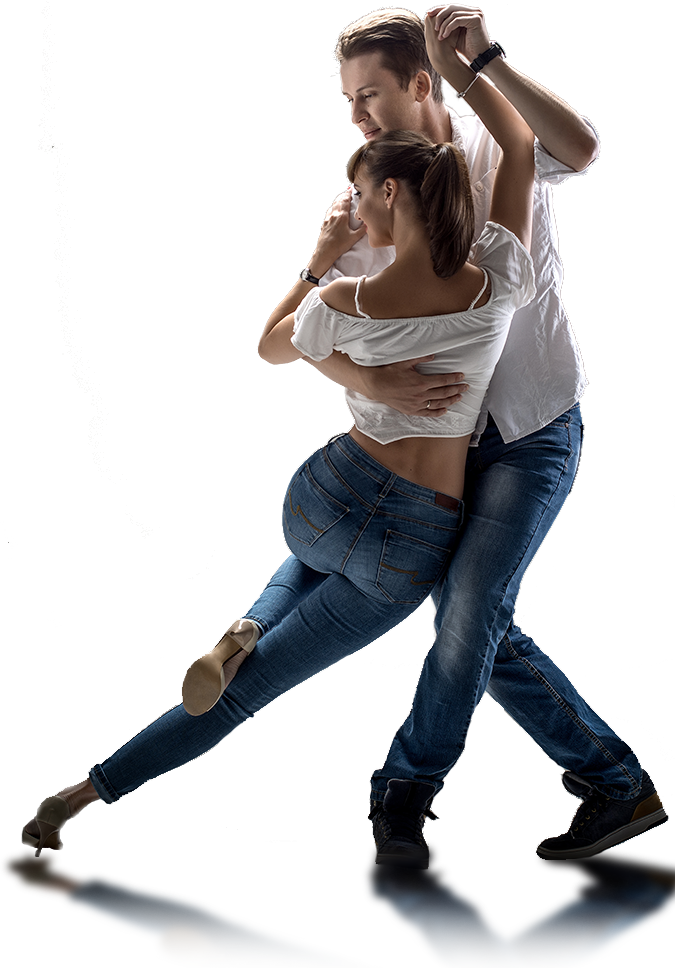

Школа сучасного танцю
Про нас
LatinoDance - школа латиноамериканських танців, у якій професіонали всі бажаючі, незалежно від віку, статі та рівня підготовки, можуть вивчати різні танцювальні напрямки. Так, основними напрямками, що викладаються в нашій школі, є романтична бачата, чуттєва кізомба і, звичайно ж, запальна сальса. Наша школа ставить собі у пріоритет навчити Вас танцю, почуттю ритму, пластиці. У нас завжди весела, позитивна обстановка, запальні та яскраві заходи, зручне розташування зали та відповідальні тренери, які знаходять підхід до кожного учня нашої школи танців. З нами легко, позитивно та весело! З нами заняття танцями стануть для Вас насолодою! Що може бути краще після напружених трудових буднів, як не уроки танців? Відвідуючи наші заняття, Ви отримаєте:
- Позитивні емоції
- Хороший настрій та енергію для нових звершень
- Фізичну активність
- Спорт і танці - запорука здоров'я та відмінного самопочуття
- Нові знайомства
- Ми постійно влаштовуємо тематичні вечірки та майстер-класи
LatinoDance вважається однією із найсильніших шкіл в Україні. Наші учні якісно виділяються на танцполах Києва та України, вони неодноразово разом із викладачами перемагали на багатьох всеукраїнських змаганнях.
Чому у нас одна з найбільших та популярних шкіл у Києві:- Наших інструкторів цінують не лише як чудових танцюристів, а насамперед як педагогів! Мало вміти гарно танцювати. Важливо вміти навчити інших. Наша основна мета – навчити будь-кого танцювати, знайти підхід до кожного.
- Система all inclusive у загальних абонементах. Не потрібно вибирати, куди ходити, не потрібно купувати кілька різних абонементів на різні напрямки. У нас по одному абонементу можна відвідувати різні напрямки та заняття є щодня.
- Найзручніше розташування зали. Ми знаходимося в самому центрі Києва, за 5 хвилин пішки всі три гілки метро.
Бачата
Бачата - один із найпростіших за хореографією латиноамериканський танець, що зародився в Домініканській республіці приблизно в 60-х роках XX століття. Його основу становить дуже близьке перебування партнерів по відношенню один до одного під час виконання фігур. У цьому і проявляється головна особливість стилю — чуттєвий романтизм.
Чим ще привабливий цей жанр?- Гнучкістю та пластикою тіл, що неможливо не помітити, спостерігаючи за професійними танцюристами.
- Присутністю повної гармонії та взаєморозуміння між партнерами. В іншому випадку бачата втрачає свою унікальність.
- Ведучим у парі вважається чоловік. Жінка слідує за ним, супроводжуючи кожен свій рух плавним обертанням стегон.
- Танець не позбавлений імпровізації, що робить його ще більш захоплюючим та захоплюючим.
Кізомба
Кізомба , або "африканське танго", як її часто іменують - один із наймолодших танцювальних напрямків. Саме слово походить з Анголи і у перекладі з діалекту кімбунду означає "вечірка". Це виключно парний танець і значно легший, чим, скажімо, сальса. Манкий, хвилюючий, легкий та чуттєвий. Враховуючи його чуттєвість, дехто бачить певну схожість кізомби та аргентинського танго, що еволюціонувало під впливом африканськоі культури і традицій. Характерними рисами танцю є плавне і повільне пересування пари по танцполу з легкими прискореннями та уповільненнями, що слугують для музичного обігравання. Основні кроки танцю не складні й опанувати їх під силу кожному, вважають мої співрозмовники. Кізомба доволі спокійна, не вимагає великого фізичного навантаження й підходить для людей різного віку.
Сальса

Сальса, танець кохання і свободи, народився на Кубі, де розуміються і на тому, і на іншому. Цей танець, наповнений цікавими комбінаціями, розкутими та пристрасними рухами, несе в собі атмосферу веселощів та флірту. Всім відомо, що слово "salsa" означає "соус", і дійсно, ця музика та танець так само гарячі, як гострий соус, характерний для кубинської та іспанської кухні. На відміну від бальних латиноамериканських танців, які є, по суті своїй, спортом, сальса доступна людям різного віку та різної фізичної підготовки, адже вона є насамперед засобом спілкування. У сальсі немає постійних пар, зміна партнерів дозволяє вчитися в танці порозуміння між абсолютно незнайомими людьми. Танцювати сальсу можна в будь-якому клубі світу, спілкуючись із партнером універсальною мовою танцю.
Вартість занять
| Кількість занять | 1 | 4 | 8 | безліміт |
| Ціна | 300 грн | 1000 грн | 1600 грн | 2500 грн |
Записатися до студії
Заповніть форму нижче, і ми обов'язково з Вами зв'яжемось!